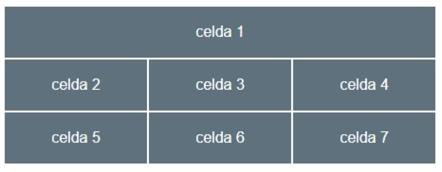

celda 1
celda 2
celda 3
celda 4
celda 5
celda 6
celda 7
Trata de construir esta disposición tipo tabla usando el layout tipo grid. En el código HTML los elementos hijos son las celdas con el texto celda xx y esta´n escritos como bloques div. La alineación del texto al centro es un estilo CSS com el color o el fondo. La linea entre celdas es un gap de 1px. Intenta logarar el mismo aspecto que la figura.
